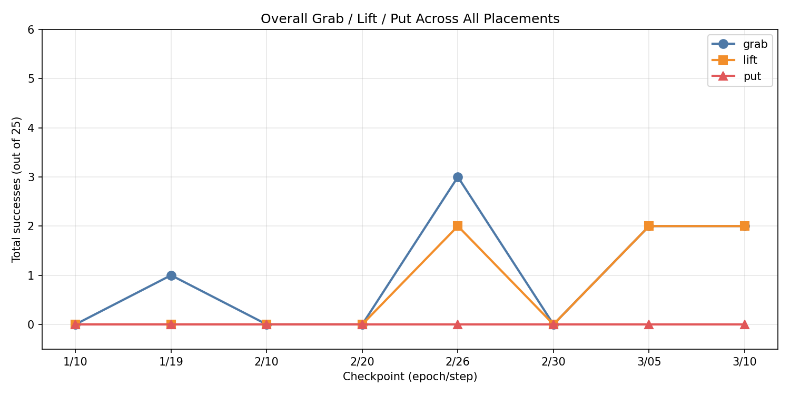

The project is not only one demo. It is a repeatable pipeline for collecting data, training policies, and evaluating real behavior.
Teleoperated episodes in the lab.
LeRobot datasets with synchronized observations/actions.
Fine‑tune SmolVLA and track experiments.
Run live inference and evaluate success/failure.
